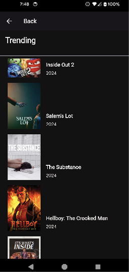

CHAPTER 14 Handling User Input and Gestures
Introduction
In this chapter, you will learn how to handle user input. There are many ways to capture a user's input, from buttons to text fields. Buttons are the most common input method and provide a variety of styling options to indicate different states. You will learn about the all-important GestureDetector widget for handling taps and other gestures. Ink widgets are a great way to provide splash feedback for a user pressing your widgets. You will learn about repositories and how to separate your code to make it easier to switch components. And finally, you will implement infinite scrolling and paging API calls to show a complete list of movies.
Structure
The chapter covers the following topics:
- User input and event handling
- GestureDetector
- Focus management
- Text
- Ink widgets
- KeyboardListener
- Repositories
- Movie listing
Objectives
By the end of this chapter, you will know how to handle events from several different input types and how to handle focus management. You will learn how to handle gestures such as taps, long presses, and keyboard entries for specific widgets. You will learn about Ink widgets, part of Google's Material Design. You will learn how to create a repository and separate database and network API calls. You will also learn how to create an infinite scrolling list of movies.
User input and event handling
User input and event handling are important for building interactive and responsive Flutter applications. They allow your app to react to user actions, such as taps, gestures, keyboard input, and more. As you have seen in the movie app, the user will tap on a movie to go to the detail page. If they are on a desktop machine, they will usually click with a mouse, and if they are on a tablet, they can use a stylus. For desktop apps, using the keyboard and keyboard shortcuts makes your app more useable for power users, while touch is the most common input source on mobile devices.
Flutter provides the GestureDetector widget to detect various touch gestures like taps, drags, scaling, and more. GestureDectector also handles mouse clicks on desktop and web apps.
For text input, Flutter's TextField and TextFormField widgets handle text input, while FocusNode and FocusScope manage keyboard focus and navigation. You can also use RawKeyboardListener for lower-level keyboard event handling. Flutter can also handle input from game controllers, accessibility devices, and other platform-specific input mechanisms.
For the desktop, changing the cursor when in different areas of the app helps the user know what to do in that area. For example, when moving the mouse over a text field, you can change the cursor to a text input cursor as follows:
MouseRegion(
cursor: SystemMouseCursors.text,
child: TextField(),
)
Callback functions are the core of event handling in Flutter. These functions are triggered when specific events occur, such as a button tap, text field change, or gesture detection.
GestureDetector
The GestureDetector widget in Flutter is the main widget for capturing and responding to user interactions with your app. It is a powerful tool that allows you to detect a wide range of gestures, from simple taps to complex multi-touch gestures like pinch-to-zoom. GestureDetector itself does not have a visual representation. It acts as an invisible wrapper around its child widget, capturing user interactions on that child. It listens for pointer events (touches, mouse clicks, etc.) on its child and attempts to recognize specific gestures for the provided callbacks. You provide callback functions to the GestureDetector for the gestures you want to detect. These callbacks are triggered when the corresponding gesture is recognized. There are many different methods GestureDetector handles:
onTaponDoubleTaponLongPressonScaleUpdate
These are just a few of the provided methods. There are other methods for secondary and tertiary taps. If you want to handle panning or scaling an image, use the following methods:
onPanDownonPanStartonPanUpdateonPanEndonPanCancel
Similar methods exist for scaling. For dragging, there are several callbacks to use:
onVerticalDragDownonVerticalDragStartonVerticalDragUpdateonVerticalDragEndonVerticalDragCancel
There are callbacks for Horizontal drags as well. You have seen instances of GestureDetector in classes like FavoriteRow:
GestureDetector(
onTap: () => onMovieTap(favorite.movieId)
)
You will mostly just use the onTap method, but the other methods exist for more complex interactions.
Focus management
The FocusManager class plays a central role in managing focus within your application. It acts as a singleton service that provides access to the focus tree and offers methods for controlling focus behavior. The FocusManager maintains the focus tree, tracks the primary focus, and sends key events to the primary focus. It also maintains the rootScope, which is the top-level scope for focus nodes. You can get an instance of the FocusManager with:
FocusManager focusManager = FocusManager.instance;
There are only a few methods you can use with the FocusManager:
addEarlyKeyEventHandler: Handle key events before widgetsaddLateKeyEventHandler: Handle key events if not handled by other widgets
You will not usually use the FocusManager as the FocusNode class is used with widgets. Flutter's focus management system is key to controlling which widget receives input from the keyboard or other input devices. It ensures a smooth and intuitive user experience, especially when dealing with forms, text fields, and interactive elements. On a mobile device, the keyboard's next arrow will go to the next focusable widget, while on the desktop or web, the tab key will move to the next widget.
FocusNode is a fundamental class for managing focus in Flutter. Each widget that wants to receive focus needs to be associated with a FocusNode. You will create one focus node for each TextField. FocusNodes form a hierarchical tree structure that mirrors the widget tree. This tree helps determine the flow of focus between widgets. Setting the autofocus property to true on a TextField automatically gives it focus when it is first built. The easiest way to programmatically request focus for a widget is to use focusNode.requestForcus() for the focus node associated with that widget. You can attach a listener to a FocusNode to be notified when its focus state changes by calling addListener(). This allows you to perform actions or update the UI based on focus events. Here is a sample code that detects when the focus is lost and sets the editing flag to false:
textFocusNode.addListener(() {
if (!textFocusNode.hasFocus && widget.editing) {
setState(() {
widget.editing = false;
});
}
});
FocusNode methods:
hasFocus: Indicates whether theFocusNodecurrently has focus.requestFocus(): Requests focus on the associated widget.unfocus(): Removes focus from the associated widget.addListener(): Allows you to listen for focus changes on the FocusNode.
A FocusScope defines a subtree in the focus tree. It allows you to manage focus within that subtree, such as moving focus to the next or previous widget within the scope.
Each FocusScope is associated with a FocusScopeNode, which is a special type of FocusNode that manages the focus within its scope. You will typically only need these if you use a FocusScope.
FocusScopeNode methods:
requestFocus(): Requests focus for a specificFocusScopeNodewithin the scope.nextFocus(): Moves focus to the next focusable widget in the scope.previousFocus(): Moves focus to the previous focusable widget in the scope.unfocus(): Removes focus from any focused widget within the scope.
If you need to have a grouped set of widgets with their own specialized traversal policy, you will use a FocusTraversalGroup. This widget has a FocusTraversalPolicy to determine how focusable widgets are traversed. This is more complex than you really need, but if you have a large screen with a lot of form widgets and you need to have different traversal policies for each, this will be the widget you need. There are some predefined policies like WidgetOrderTraversalPolicy (which is just the order in which the widgets were created) or ReadingOrderTraversalPolicy (which is the natural ready order). You can use OrderedTraversalPolicy to specify a specific order.
Text
TextField widgets in Flutter are the primary way to capture text input from users. They are versatile and offer a range of features for creating various input experiences, from simple single line entries to complex multi-line text editors. Here is a closer look at how they work and contribute to event handling. The TextField widget offers callbacks like onChanged (for text changes), onSubmitted (for text submission), and onEditingComplete (for editing completion). You can set a FocusNode on a TextField by setting the focusNode field with an instance of a FocusNode. You can make a TextField multi-line by using these fields:
keyboardType: TextInputType.multiline,
maxLines: null,
To listen for text changes, use a statement like:
onChanged: (String text) => _phone = text,
For a final submitted text value, use:
onSubmitted: (value) {},
To change the keyboard type for different fields, use the keyboardType parameter. This can be:
TextInputType.textTextInputType.decimalTextInputType.numberTextInputType.phoneTextInputType.datetimeTextInputType.emailAddressTextInputType.urlTextInputType.visiblePasswordTextInputType.nameTextInputType.streetAddress
To set the action button on the keyboard, use the textInputAction field. These can be:
TextInputAction.doneTextInputAction.goTextInputAction.searchTextInputAction.sendTextInputAction.previousTextInputAction.continueAction(iOS – Return key)TextInputAction.join(iOS – Return Key Join)TextInputAction.route(iOS – route)TextInputAction.newline– carriage returnTextInputAction.emergencyCall
For passwords, you need to set the obscureText field to true. Here is a sample showing a TextField with a few fields set:
TextField(
autofocus: true,
focusNode: textFocusNode,
textInputAction: TextInputAction.done,
onSubmitted: (value) {
// Handle text value
},
controller: searchTextController,
)
Ink widgets
Ink widgets are part of Material Design's widgets. This is made up of widgets like:
InkInkWellInkResponse
Ink will draw a color or decoration under the child, while the InkWell will draw on top of an Ink widget. The InkWell widget provides material style visual feedback (like ripple effects) when a user interacts with certain areas of the UI. It handles taps and clicks, making them ideal for buttons and clickable UI elements. InkWell is an ink splash effect that makes your UI feel responsive. It is a great way to provide visual feedback to users when they interact with tappable elements. You can change the splash color and the radius of the splash, as well as a few more fields, to customize the look of the splash. InkWell relies on the GestureDetector to handle taps. It handles all types of taps and hovers (entering and exiting the area) with the onHover callback, mouse cursors for desktop and web, and can use different colors for different states. InkWell requires a Material ancestor. This can be the MaterialApp at the root of your UI, or it can be wrapped in a Material widget. Be careful when using containers with colors, as this will cause the ripple effect not to work. Here is an example of an InkWell inside of an Ink widget. This shows a green square that, when tapped has a blue ripple effect:
Ink(
color: Colors.green,
width: double.infinity,
height: 300,
child: InkWell(
splashColor: Colors.blue,
onTap: () {},
child: const Center(child: Text('Tap Me')),
),
)
InkResponse
InkWells are designed for rectangular areas, while InkResponses can be of any shape. You can use the splashFactory field to define an InteractiveInkFeatureFactory instance. You can use existing factories such as InkRipple.splashFactory and InkSplash.splashFactory or create your own. This class has most of the same fields as an InkWell but is more customizable. InkResponses can clip splashes that extend outside of its bounds. To set the shape used to highlight when pressed or focused, use the highlightShape field. You can change borders and many different colors:
FocusHoverHighlightOverlaySplash
KeyboardListener
KeyboardListener is a widget in Flutter that allows you to listen to and respond to raw keyboard events in your application. It gives you lower-level access to keyboard input, enabling you to build custom interactions or handle scenarios where the standard focus-based input handling might not be sufficient. The onKeyEvent field is the primary callback function that is triggered whenever a key event occurs. It receives a KeyEvent object as an argument, which contains information about the key that was pressed or released. This event contains the physicalKey, which represents the physical key that was pressed or released (e.g., PhysicalKeyboardKey.keyA, PhysicalKeyboardKey.arrowUp). The logicalKey represents the logical key, which considers modifiers like Shift or Alt (e.g., LogicalKeyboardKey.keyA, LogicalKeyboardKey.shiftLeft). The character is the Unicode character string that would be produced by the key press (if applicable). Note that the character field is not available on key up events. The event you get will either be a KeyUpEvent or a KeyDownEvent, indicating what type of event it is. Here is an example of a KeyboardListener wrapping a TextField that will handle the enter or escape keys:
KeyboardListener(
focusNode: textFocusNode,
onKeyEvent: (event) {
if (event.runtimeType == KeyDownEvent &&
((event.logicalKey == LogicalKeyboardKey.enter) ||
(event.logicalKey == LogicalKeyboardKey.escape))) {
setState(() {
// Do something when these events happen
});
}
},
child: TextField()
)
You also saw the SingleActivator class used in your menus. This is a shortcut that uses the LogicalKeyboardKey.
Repositories
Notice that we now have several different types of models. We have models that the UI uses and models that the database uses. This is because database models may have different fields (like IDs) that the UI does not need. Your UI may only show a small portion of the data downloaded. To solve this problem, you need to convert database models to UI models and the reverse. To do this, create a set of methods to convert from one model type to another:
-
Create a new file called
model_converter.dartin thedatabasefolder. -
Add the methods for converting genres:
import 'package:movies/data/database/models/database_models.dart'; import 'package:movies/data/models/models.dart'; List<Genre> databaseGenreToGenre(List<DBMovieGenre> databaseGenres) { return databaseGenres .map((databaseGenre) => Genre(id: databaseGenre.remoteId, name: databaseGenre.name)) .toList(); } List<DBMovieGenre> movieGenreToDatabaseGenre(List<Genre> genres) { return genres .map((genre) => DBMovieGenre(id: genre.id, remoteId: genre.id, name: genre.name)) .toList(); }The first method takes a list of database genres and converts them to a list of genres and the second converts genres to database genres.
-
Add the movie configuration methods:
MovieConfiguration? databaseMovieConfigurationToMovieConfiguration( DBConfiguration? databaseMovieConfiguration) { if (databaseMovieConfiguration == null) { return null; } return MovieConfiguration( images: databaseImagesToImages(databaseMovieConfiguration.images), changeKeys: databaseMovieConfiguration.changeKeys, ); } DBConfiguration? movieConfigurationToDbConfiguration( MovieConfiguration movieConfiguration) { final dbConfiguration = DBConfiguration(id: 1, images: imagesToDbImages(movieConfiguration.images), changeKeys: [...movieConfiguration.changeKeys]); return dbConfiguration; } -
Add the configuration image methods:
MovieConfigurationImages databaseImagesToImages(DBConfigurationImages databaseImages) { return MovieConfigurationImages( baseUrl: databaseImages.baseUrl, secureBaseUrl: databaseImages.secureBaseUrl, backdropSizes: databaseImages.backdropSizes, logoSizes: databaseImages.logoSizes, posterSizes: databaseImages.posterSizes, profileSizes: databaseImages.profileSizes, stillSizes: databaseImages.stillSizes, ); } DBConfigurationImages imagesToDbImages(MovieConfigurationImages images) { final dbImages = DBConfigurationImages( baseUrl: images.baseUrl, secureBaseUrl: images.secureBaseUrl, backdropSizes: [...images.backdropSizes], logoSizes: [...images.logoSizes], posterSizes: [...images.posterSizes], profileSizes: [...images.profileSizes], stillSizes: [...images.stillSizes], ); return dbImages; }
Sources
Interfaces are a great way to define a set of methods but have different implementations. To do this, we will create a MovieSource interface that will define the methods required for implementing a class of type MovieSource. This class will be abstract so that it cannot be created by itself.
-
In the
datafolder, create a new folder namedsources. -
Create a new file named
movie_source.dart. -
Add the following interface:
import 'package:movies/data/database/models/favorite.dart'; import 'package:movies/data/models/models.dart'; abstract class MovieSource { Future<List<Genre>> getGenres(); Future<MovieResponse?> getTrending(int page); Future<MovieResponse?> getNowPlaying(int page); Future<MovieResponse?> getTopRated(int page); Future<MovieResponse?> getPopular(int page); Future<MovieResponse?> searchMovies(String query, int page); Future<MovieResponse?> searchMoviesByGenre(String genre, int page); Future<MovieDetails?> getMovieDetails(int movieId); Future<MovieVideos?> getMovieVideos(int movieId); Future<MovieConfiguration?> getMovieConfiguration(); Future<MovieCredits?> getMovieCredits(int movieId); Future saveFavorite(MovieDetails movieDetails); Future<bool> removeFavorite(int id); Future<List<DBFavorite>> getFavorites(); Stream<List<DBFavorite>> streamFavorites(); }This defines some of the methods that we have already used. We will now create two sources: one for the database and one for the network API.
-
Create a new file named
network_movie_source.dart. Add:import 'package:lumberdash/lumberdash.dart'; import 'package:movies/data/database/models/favorite.dart'; import 'package:movies/data/models/models.dart'; import 'package:movies/network/movie_api_service.dart'; import 'package:movies/data/sources/movie_source.dart'; class NetworkMovieSource implements MovieSource { final MovieAPIService _movieAPIService; NetworkMovieSource(this._movieAPIService); // TODO implement methods } -
Add the
getGenresmethod:@override Future<List<Genre>> getGenres() async { final response = await _movieAPIService.getGenres(); if (response.statusCode == 200) { return Genres.fromJson(response.data).genres; } else { logError('Failed to load genres with error ${response.statusCode} and message ${response.statusMessage}'); return []; } }This uses the movie service to get the genre list, convert the data from JSON and return the result.
-
Add the
getTrendingmethod:@override Future<MovieResponse?> getTrending([int page = 1]) async { final response = await _movieAPIService.getTrending(page); if (response.statusCode == 200) { return MovieResponse.fromJson(response.data); } else { logError('Failed to load trending movies with error ${response.statusCode} and message ${response.statusMessage}'); return null; } } -
Add the
getNowPlayingmethod:@override Future<MovieResponse?> getNowPlaying([int page = 1]) async { final response = await _movieAPIService.getNowPlaying(page); if (response.statusCode == 200) { return MovieResponse.fromJson(response.data); } else { logError('Failed to load now playing movies with error ${response.statusCode} and message ${response.statusMessage}'); return null; } } -
Add the
getTopRatedmethod:@override Future<MovieResponse?> getTopRated([int page = 1]) async { final response = await _movieAPIService.getTopRated(page); if (response.statusCode == 200) { return MovieResponse.fromJson(response.data); } else { logError('Failed to load top rated movies with error ${response.statusCode} and message ${response.statusMessage}'); return null; } } -
Add the
getPopularmethod:@override Future<MovieResponse?> getPopular([int page = 1]) async { final response = await _movieAPIService.getPopular(page); if (response.statusCode == 200) { return MovieResponse.fromJson(response.data); } else { logError('Failed to load popular movies with error ${response.statusCode} and message ${response.statusMessage}'); return null; } } -
Add the
getMovieConfigurationmethod:@override Future<MovieConfiguration?> getMovieConfiguration() async { final response = await _movieAPIService.getMovieConfiguration(); if (response.statusCode == 200) { return MovieConfiguration.fromJson(response.data); } else { logError('Failed to load movie configuration with error ${response.statusCode} and message ${response.statusMessage}'); return null; } } -
Add the
getMovieCreditsmethod:@override Future<MovieCredits?> getMovieCredits(int movieId) async { final response = await _movieAPIService.getMovieCredits(movieId); if (response.statusCode == 200) { return MovieCredits.fromJson(response.data); } else { logError('Failed to load movie credits with error ${response.statusCode} and message ${response.statusMessage}'); return null; } } -
Add the
getMovieDetailsmethod:@override Future<MovieDetails?> getMovieDetails(int movieId) async { final response = await _movieAPIService.getMovieDetails(movieId); if (response.statusCode == 200) { try { return MovieDetails.fromJson(response.data); } catch (e) { logError('Failed to parse movie details with error $e'); return null; } } else { logError('Failed to load movie details with error ${response.statusCode} and message ${response.statusMessage}'); return null; } } -
Add the
getMovieVideosmethod:@override Future<MovieVideos?> getMovieVideos(int movieId) async { final response = await _movieAPIService.getMovieVideos(movieId); if (response.statusCode == 200) { return MovieVideos.fromJson(response.data); } else { logError('Failed to load movie details with error ${response.statusCode} and message ${response.statusMessage}'); return null; } } -
Add the
searchMoviesmethod:@override Future<MovieResponse?> searchMovies(String query, [int page = 1]) async { final response = await _movieAPIService.searchMovies(query, page); if (response.statusCode == 200) { return MovieResponse.fromJson(response.data); } else { logError('searchMovies failed movies with error ${response.statusCode} and message ${response.statusMessage}'); return null; } } -
Add the
searchMoviesByGenremethod:@override Future<MovieResponse?> searchMoviesByGenre(String genre, [int page = 1]) async { final response = await _movieAPIService.searchMoviesByGenre(genre, page); if (response.statusCode == 200) { return MovieResponse.fromJson(response.data); } else { logError('searchMoviesByGenre failed with error ${response.statusCode} and message ${response.statusMessage}'); return null; } } -
Add the
saveFavoritemethod:@override Future<int> saveFavorite(MovieDetails movieDetails) async { return 0; }This method is not used for the network API so it just returns 0.
-
Add the
removeFavoritemethod:@override Future<bool> removeFavorite(int id) async { return false; }This is not used as well.
-
Add the
getFavoritesmethod:@override Future<List<DBFavorite>> getFavorites() async { return <DBFavorite>[]; }This is not used.
-
Add the
streamFavoritesmethod:@override Stream<List<DBFavorite>> streamFavorites() { return Stream.value(<DBFavorite>[]); }
Now that you have the network source, you can create a database source. This will contain only the methods needed to access the database.
Create a new file in the sources directory named database_source.dart. Add the following:
import 'package:movies/data/models/models.dart';
import 'package:movies/data/database/drift/database_interface.dart';
import 'package:movies/data/database/model_converter.dart';
class DatabaseSource {
final IDatabase? _database;
DatabaseSource(this._database);
Future<List<Genre>> getGenres() async {
final genres = <Genre>[];
if (_database == null) {
return genres;
}
final networkGenres = await _database.getGenres();
genres.addAll(databaseGenreToGenre(networkGenres));
return genres;
}
Future<MovieConfiguration?> movieConfiguration() async {
if (_database == null) {
return null;
}
return databaseMovieConfigurationToMovieConfiguration(
await _database.getMovieConfiguration());
}
}
This is pretty simple, as we only save genres and the configuration to the database.
Repository
Just as we have abstracted out the different sources, we want to separate out calling the database and the network. To do that, we want to create a repository class that will call either the database or the network APIs, depending on the call. This class will implement the MovieSource interface. Next, create the MovieRepository class:
-
In the
datafolder, create a new folder namedrepository. -
Create a new file named
movie_repository.dart. Add the following:import 'package:lumberdash/lumberdash.dart'; import 'package:movies/data/database/models/favorite.dart'; import 'package:movies/data/database/drift/database_interface.dart'; import 'package:movies/data/database/model_converter.dart'; import 'package:movies/data/models/models.dart'; import 'package:movies/data/sources/movie_source.dart'; class MovieRepository implements MovieSource { final MovieSource _movieSource; final IDatabase? _database; MovieRepository(this._movieSource, this._database); // Implement methods }This takes in both the movie source and the database interface. Note that by using the database interface, we can test this repository. (See Chapter 18, Testing and Performance)
-
Add the
getGenresmethod:@override Future<List<Genre>> getGenres() async { try { final dbMovieGenres = await _database?.getGenres(); if (dbMovieGenres?.isEmpty == true) { final genres = await _movieSource.getGenres(); await _database?.saveGenres(movieGenreToDatabaseGenre(genres)); return genres; } if (_database == null) { return []; } return databaseGenreToGenre(dbMovieGenres!); } catch (e) { logMessage('getGenres: ${e.toString()}'); logError(e); return []; } }This uses the database interface to get the genre list. If this does not exist, we call the network movie source to get the list of genres and then save the genres to the database. This should only happen once, as subsequent calls will just retrieve the data from the database and save a call to the network.
-
Add the
getTrendingmethod:@override Future<MovieResponse?> getTrending(int page) async { try { return _movieSource.getTrending(page); } catch (e) { logMessage('getTrending: ${e.toString()}'); logError(e); } return null; } -
Add the
getNowPlayingmethod:@override Future<MovieResponse?> getNowPlaying(int page) async { try { return _movieSource.getNowPlaying(page); } catch (e) { logMessage('getNowPlaying: ${e.toString()}'); logError(e); } return null; } -
Add the
getTopRatedmethod:@override Future<MovieResponse?> getTopRated(int page) async { try { return _movieSource.getTopRated(page); } catch (e) { logMessage('getTopRated: ${e.toString()}'); logError(e); } return null; } -
Add the
getPopularmethod:@override Future<MovieResponse?> getPopular(int page) async { try { return _movieSource.getPopular(page); } catch (e) { logMessage('getPopular: ${e.toString()}'); logError(e); } return null; } -
Add the
getMovieConfigurationmethod:@override Future<MovieConfiguration?> getMovieConfiguration() async { try { final dbMovieConfiguration = await _database?.getMovieConfiguration(); if (dbMovieConfiguration == null) { final movieConfiguration = await _movieSource.getMovieConfiguration(); if (movieConfiguration == null) { return null; } final dbConfiguration = movieConfigurationToDbConfiguration(movieConfiguration); await _database?.saveMovieConfiguration(dbConfiguration!); return movieConfiguration; } return databaseMovieConfigurationToMovieConfiguration( dbMovieConfiguration); } catch (e) { logMessage('getMovieConfiguration: ${e.toString()}'); logError(e); } return null; }This will first check the database for the configuration information. If it has not been stored, retrieve it using the movie source and save it to the database.
-
Add the
getMovieCreditsmethod:@override Future<MovieCredits?> getMovieCredits(int movieId) async { try { return _movieSource.getMovieCredits(movieId); } catch (e) { logMessage('getMovieCredits: ${e.toString()}'); logError(e); } return null; } -
Add the
getMovieDetailsmethod:@override Future<MovieDetails?> getMovieDetails(int movieId) async { try { return _movieSource.getMovieDetails(movieId); } catch (e) { logMessage('getMovieDetails: ${e.toString()}'); logError(e); } return null; } -
Add the
getMovieVideosmethod:@override Future<MovieVideos?> getMovieVideos(int movieId) async { try { return _movieSource.getMovieVideos(movieId); } catch (e) { logMessage('getMovieVideos: ${e.toString()}'); logError(e); } return null; } -
Add the
searchMoviesmethod:@override Future<MovieResponse?> searchMovies(String query, int page) async { try { return _movieSource.searchMovies(query, page); } catch (e) { logMessage('searchMovies: ${e.toString()}'); logError(e); } return null; } -
Add the
searchMoviesByGenremethod:@override Future<MovieResponse?> searchMoviesByGenre(String genre, int page) async { try { return _movieSource.searchMoviesByGenre(genre, page); } catch (e) { logMessage('searchMoviesByGenre: ${e.toString()}'); logError(e); } return null; }Use the movie source to search for movies by genre.
-
Add the
saveFavoritemethod:@override Future saveFavorite(MovieDetails movieDetails) async { if (_database == null) { return; } try { final favorite = DBFavorite( id: movieDetails.id, movieId: movieDetails.id, backdropPath: movieDetails.backdropPath, posterPath: movieDetails.posterPath, favorite: true, popularity: movieDetails.popularity, releaseDate: movieDetails.releaseDate, title: movieDetails.title, overview: movieDetails.overview); _database.saveFavorite(favorite); } catch (e) { logMessage('saveFavorite: ${e.toString()}'); logError(e); } }This method saves a favorite to the database.
-
Add the
removeFavoritemethod:@override Future<bool> removeFavorite(int id) async { if (_database == null) { return false; } try { return _database.removeFavorite(id); } catch (e) { logMessage('removeFavorite: ${e.toString()}'); logError(e); } return false; }This will remove a favorite from the database.
-
Add the
getFavoritesmethod:@override Future<List<DBFavorite>> getFavorites() async { if (_database == null) { return []; } try { return _database.getFavorites(); } catch (e) { logMessage('getFavorites: ${e.toString()}'); logError(e); } return []; }This will get the list of favorites saved to the database.
-
Add the
streamFavoritesmethod:@override Stream<List<DBFavorite>> streamFavorites() { if (_database == null) { return Stream.value(<DBFavorite>[]); } return _database.streamFavorites(); }This will stream favorites from the database so that when the database is updated, the UI will also update.
MovieViewModel
Now that you have the repository done, you need to update the MovieViewModel to use it. Open movie_viewmodel.dart and change all methods to use the new repository:
-
Instead of directly using the API service, change:
final MovieAPIService movieAPIService;To:
final MovieSource _movieRepository;Remove:
final IDatabase database;Change the constructor to:
MovieViewModel(this._movieRepository); -
Change
setupConfigurationto:Future setupConfiguration() async { final configuration = await _movieRepository.getMovieConfiguration(); if (configuration != null) { movieConfiguration = configuration; } } -
Change
setupGenresto:Future setupGenres() async { movieGenres = await _movieRepository.getGenres(); } -
Replace the following methods:
Future saveFavorite(MovieDetails movieDetails) async { _movieRepository.saveFavorite(movieDetails); } Future<bool> removeFavorite(int id) async { return _movieRepository.removeFavorite(id); } Future<List<DBFavorite>> getFavorites() async { return _movieRepository.getFavorites(); } Stream<List<DBFavorite>> streamFavorites() { return _movieRepository.streamFavorites(); } -
Replace the
getXXXMoviescalls with:Future<MovieResponse?> getTrendingMovies(int page) async { final response = await _movieRepository.getTrending(page); if (response != null) { trendingMovies = response.results; } return response; } Future<MovieResponse?> getPopular(int page) async { final response = await _movieRepository.getPopular(page); if (response != null) { popularMovies = response.results; } return response; } Future<MovieResponse?> getTopRated(int page) async { final response = await _movieRepository.getTopRated(page); if (response != null) { topRatedMovies = response.results; } return response; } Future<MovieResponse?> getNowPlaying(int page) async { final response = await _movieRepository.getNowPlaying(page); if (response != null) { nowPlayingMovies = response.results; } return response; } -
Replace the rest of the methods with:
Future<MovieDetails?> getMovieDetails(int movieId) async { return _movieRepository.getMovieDetails(movieId); } Future<MovieVideos?> getMovieVideos(int movieId) async { return _movieRepository.getMovieVideos(movieId); } Future<MovieCredits?> getMovieCredits(int movieId) async { return _movieRepository.getMovieCredits(movieId); } // genres is a pipe delimited string Future<MovieResponse?> searchMoviesByGenre(String genres, int page) async { final response = await _movieRepository.searchMoviesByGenre(genres, page); if (response != null) { nowPlayingMovies = response.results; } return response; } Future<MovieResponse?> searchMovies(String searchText, int page) async { final response = await _movieRepository.searchMovies(searchText, page); if (response != null) { nowPlayingMovies = response.results; } return response; } -
Open up
providers.dartto add new providers and update the viewmodel provider. -
After movieAPIService, add:
@Riverpod(keepAlive: true) Future<MovieSource> networkMovieSource(Ref ref) async { final service = await ref.read(movieAPIServiceProvider.future); return NetworkMovieSource(service); } @Riverpod(keepAlive: true) Future<MovieSource> movieRepository(Ref ref) async { final databaseFuture = ref.watch(driftDatabaseProvider.future); final serviceFuture = ref.watch(networkMovieSourceProvider.future); return MovieRepository( await serviceFuture, await databaseFuture); } -
Then change
movieViewModelto:final repositoryFuture = ref.watch(movieRepositoryProvider.future); final model = MovieViewModel(await repositoryFuture); await model.setup(); return model; -
Make sure you have all of the required imports.
-
Then type:
dart run build_runner build
Movie listing
One area that we have not finished is the More link on the home page. We want to bring up a new screen that shows the full list of trending, now playing, popular, or top-rated movies. It would also be nice if the listing would only load one page at a time so that we have an infinite (or at least how many movies exist) list of movies. We will use a package that will help in managing the pages and scrolling. Open up home_screen.dart, and you can see that the onMoreClicked method is empty. Start by creating the movie listing page:
-
Create a new folder in
ui/screensnamedmovie_listing. -
Create a new file named
movie_listing.dart. -
Add the
MovieListingclass:import 'package:auto_route/auto_route.dart'; import 'package:flutter/material.dart'; import 'package:flutter_riverpod/flutter_riverpod.dart'; import 'package:infinite_scroll_pagination/infinite_scroll_pagination.dart'; import 'package:movies/data/models/models.dart'; import 'package:movies/providers.dart'; import 'package:movies/router/app_routes.dart'; import 'package:movies/ui/widgets/movie_widget.dart'; import 'package:movies/ui/theme/theme.dart'; import 'package:movies/ui/widgets/movie_row.dart'; import 'package:movies/ui/widgets/not_ready.dart'; import 'package:movies/ui/movie_viewmodel.dart'; const pageCount = 20; const movieRowHeight = 140; @RoutePage(name: 'MovieListingRoute') class MovieListing extends ConsumerStatefulWidget { final MovieType movieType; const MovieListing(this.movieType, {super.key}); @override ConsumerState<MovieListing> createState() => _MovieListingState(); } class _MovieListingState extends ConsumerState<MovieListing> { // details in next steps } -
Add the needed fields:
late MovieViewModel movieViewModel; bool loading = false; int totalPagesAvailable = 0; int totalMoviesAvailable = 0; int currentPage = 1; MovieResponse? currentMovieResponse; final PagingController<int, MovieResults> _pagingController = PagingController(firstPageKey: 0);We will use the view model to get the movies. The other variables are for keeping track of how many pages and movies are available. Also, we need to keep track of the last page we loaded. The paging controller is from the
infinite_scroll_paginationpackage. This is a great package for helping load and keep track of what we have downloaded. -
Add the
initStatemethod:@override void initState() { super.initState(); _pagingController.addPageRequestListener((pageKey) { loadMovies(); }); }This will add a listener to the controller that will call our loadMovies method.
-
Add the
buildmethod:@override Widget build(BuildContext context) { final movieViewModelAsync = ref.watch(movieViewModelProvider); return movieViewModelAsync.when( error: (e, st) => Text(e.toString()), loading: () => const NotReady(), data: (viewModel) { movieViewModel = viewModel; return buildScreen(); }, ); }This method just waits for the view model to load and then calls buildScreen.
-
Add the
buildScreenmethod:Widget buildScreen() { return SafeArea( // 1 child: FutureBuilder( future: loadMovies(), builder: (context, snapshot) { if (snapshot.connectionState != ConnectionState.done) { return const Center(child: CircularProgressIndicator()); } return Scaffold( appBar: AppBar( backgroundColor: screenBackground, leading: BackButton( color: Colors.white, onPressed: () { context.router.maybePopTop(); }, ), centerTitle: false, title: Text('Back', style: Theme.of(context).textTheme.headlineMedium), ), body: Container( color: screenBackground, child: Column( mainAxisSize: MainAxisSize.min, mainAxisAlignment: MainAxisAlignment.start, crossAxisAlignment: CrossAxisAlignment.start, children: [ Padding( padding: const EdgeInsets.fromLTRB(16, 16.0, 0.0, 24.0), child: Text(getTitle(), style: Theme.of(context).textTheme.titleLarge), ), const Divider(), Expanded( // 2 child: PagedListView<int, MovieResults>( pagingController: _pagingController, builderDelegate: PagedChildBuilderDelegate<MovieResults>( // 3 itemBuilder: (context, item, index) => MovieRow( movie: item, movieViewModel: movieViewModel, onMovieTap: (movie) { context.router .push(MovieDetailRoute(movieId: item.id)); }, ), ), ), ), ], ), ), ); }, ), ); }This has some of the basic elements of the screen and then uses a
PagedListViewwith our paging controller and a movie row being returned:a. Use a
FutureBuilderto load the current page of movies. b. ThePagedListViewis from theinfinite_scroll_paginationpackage. c. TheitemBuilderjust returns aMovieRow. -
Add the
getTitleandonMovieTapmethods:String getTitle() { switch (widget.movieType) { case MovieType.trending: return 'Trending'; case MovieType.popular: return 'Popular'; case MovieType.topRated: return 'Top Rated'; case MovieType.nowPlaying: return 'Now Playing'; } } void onMovieTap(int movieId) { context.router.push(MovieDetailRoute(movieId: movieId)); } -
Add the
loadMoviesmethod:Future loadMovies() async { if (loading) { return; } loading = true; if (totalPagesAvailable == 0) { currentPage = 1; } // 1 switch (widget.movieType) { case MovieType.trending: currentMovieResponse = await movieViewModel.getTrendingMovies(currentPage); case MovieType.popular: currentMovieResponse = await movieViewModel.getPopular(currentPage); case MovieType.topRated: currentMovieResponse = await movieViewModel.getTopRated(currentPage); case MovieType.nowPlaying: currentMovieResponse = await movieViewModel.getNowPlaying(currentPage); } if (currentMovieResponse != null) { // 2 totalPagesAvailable = currentMovieResponse!.totalPages; totalMoviesAvailable = currentMovieResponse!.totalResults; currentPage++; // 3 final isLastPage = (_pagingController.itemList?.length ?? 0 + pageCount) >= totalMoviesAvailable; // 4 if (isLastPage) { _pagingController.appendLastPage(currentMovieResponse!.results); } else { // 5 _pagingController.appendPage( currentMovieResponse!.results, currentPage); } } loading = false; }This method does the following:
- Call the proper method from the view model based on the movie type.
- Gets the total pages and total results.
- Check if we are on the last page.
- If we are on the last page, append it to the end of the list.
- Otherwise, append the page of results.
-
In the terminal, type:
dart run build_runner buildNow, we need to update the
HomeScreenclass to call this class. -
Open
home_screen.dart. -
Change the
SingleChildScrollViewto aCustomScrollView:return CustomScrollView(slivers: [ SliverFillRemaining( hasScrollBody: false, ) -
Fix the ending parenthesis.
-
Change the call to
HomeScreenImage:HomeScreenImage( movieViewModel: movieViewModel, onMovieTap: onMovieTap, ) -
In the first
TitleRow'sonMoreClickedadd:context.router.push( MovieListingRoute(movieType: MovieType.trending)); -
Add the other routes. For popular:
context.router.push( MovieListingRoute(movieType: MovieType.popular)); -
Top rated:
context.router.push( MovieListingRoute(movieType: MovieType.topRated)); -
Open
app_routes.dartand add the movie listing route at the end:CustomRoute( page: MovieListingRoute.page, maintainState: false, transitionsBuilder: TransitionsBuilders.fadeIn, durationInMilliseconds: 500, )
Run dart run build_runner build, do a hot restart and click on the More link. You should see something as follows:

Figure 14.1: Movie listing page
Try scrolling and make sure you can see multiple pages of movies. Depending on your internet connection, it should be pretty smooth.
Conclusion
In this chapter, you learned how to handle user input. There are many ways to capture a user's input, from buttons to text fields. The most important widget to remember is the GestureDetector. This makes any widget clickable. Focus management is an important area to understand and is key to making it easier to traverse your app. You also learned about repositories and how to separate your code to make it easier to switch components. Finally, you implemented infinite scrolling and paging API calls.
In the next chapter, you will learn all about Firebase, including its NoSQL database, authentication, and cloud messaging. This is an easy-to-setup and use server. You will learn how to set up Firebase, install the Firebase packages, and implement Firebase database calls.